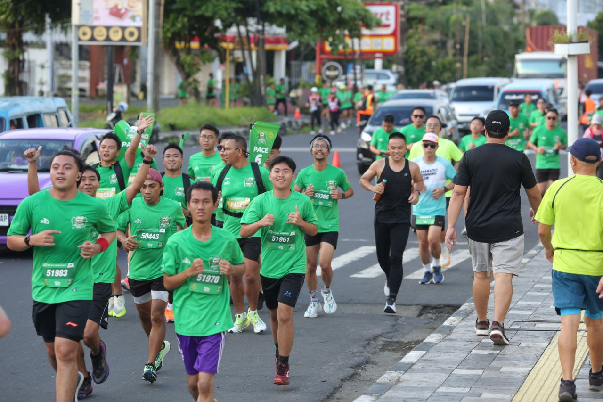

Lari adalah kegiatan saya, yang lakukan untuk itu. pertama saya
melakukan lari tipikal jogging, untuk kesehatan dan melihat potensi saya
yang diberi oleh Tuhan Yang Maha Esa. untuk mengembangkan jasmani
saya

latihan lari
Latihan lari adalah kegiatan saya sebelum mengikuti lomba lari, biasanya
saya latihan lari dengan jogging 400m. atau buat pace secepat mungkin
dalam finish 400m pace tercepat saya dalam finish 400m adalah 1:45
menit.
naik gunung
kegiatan naik gunung adalah kegiatan pertama kali saya dalam naik
gunung. tapi sih tidak sampai puncak di gunung lokon,Tomohon kinilow
sulawesi utara cma sampai kawah gunung lokon